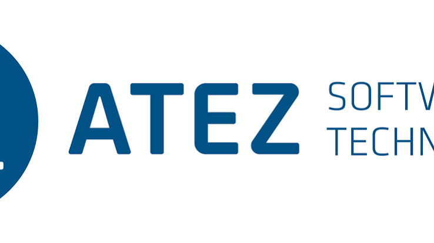
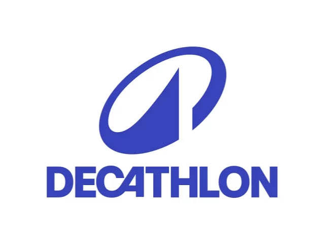

Hi, I'm
Computer Engineering Student · Full-Stack Developer
I build web platforms and automation systems focused on real user needs. Based in İstanbul, studying at Beykent University.
Computer Engineering student at Istanbul Beykent University, building full-stack web platforms and automation systems. I focus on solving real business problems — from guest check-in systems to AI-powered inventory tools. My internship at Atez Yazılım gave me hands-on experience with production-grade APIs, containerized environments, and Agile workflows.

Atez Yazılım Teknolojileri A.Ş.

Decathlon
Computer Engineering · B.Sc.
Web platform and admin panel for nightclub guest and PR management. Mobile-optimized, deployed live on a VPS with security configurations and CI/CD via GitHub.
View Live ↗End-to-end AI pipeline for inventory matching. Analyzes product images using YOLO for object detection, EasyOCR for text extraction, Hugging Face NER, and TF-IDF similarity.
View on GitHub ↗Real-time ski resort dashboard for Turkey's major slopes. Displays weather conditions, 5-day forecasts, snow depth, and equipment recommendations for in-store sales consultants.
View on GitHub ↗Let's build something.
Open to internship opportunities, collaborations, and interesting projects.